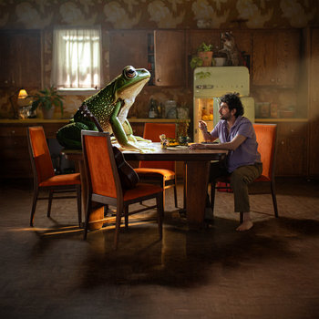

a small, but important, collection of songs
by: Dave Hawkins
Will I Be the Sun
Eleri Ward
3:33 made me cry: April 14th, 2026When: on the way home from a dr appt
♪ listen on bandcampI Am Safe
Beautiful Chorus
7:01 made me cry: February 4th, 2026When: during a brief guided meditation on a work trip in my hotel room in Moses Lake, WA
♪ listen on bandcampMicrowave Dinner
Petey USA
4:42 made me cry: November 22nd, 2025When: on a morning run at 5:15am
♪ listen on bandcamp
One Seat Down
Jacob Jeffries
4:51 made me cry: September 5th, 2025When: on a morning run at 5:45am
♪ listen on bandcampNobody Loves You Like Your Mother
Theo Katzman
5:06 made me cry: April 12th, 2023When: live in concert holding my wife; pregnant with our 3rd child
♪ listen on bandcamp